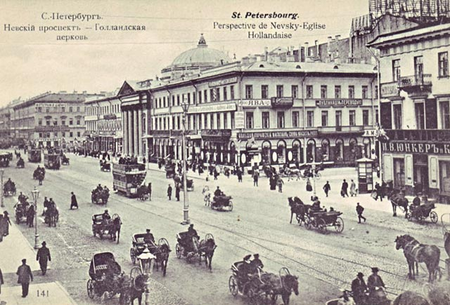
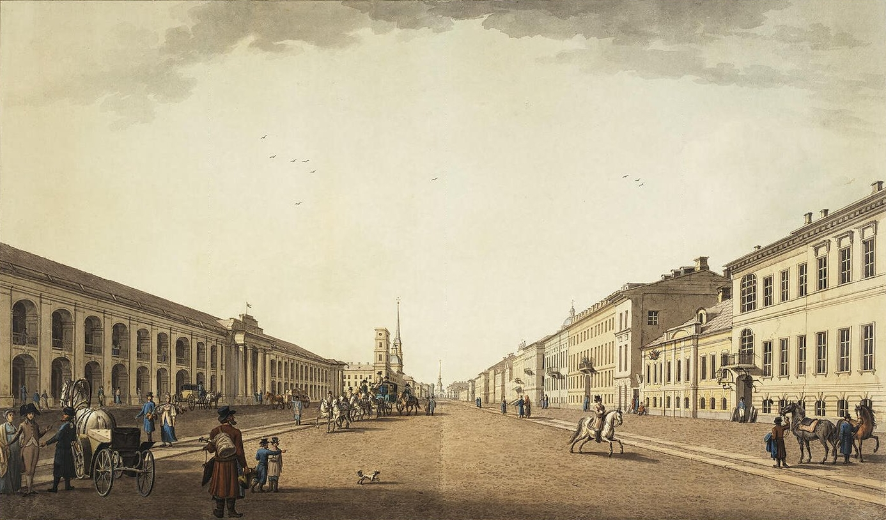

Вот, подлинно, если Бог хочет наказать, так отнимет прежде разум.
Городничий
Событие
Узнав о приезде инкогнито ревизора из
столицы, градоначальство уездного
города N приняло за него
проигравшегося в карты коллежского
регистратора Хлестакова.
Не поспешивший развеять всеообщее
заблуждение, Хлестаков без всякого
стеснения воспользовался
сложившиеся ситуацией.
Данный господин раздавал заведомо
невыполнимые обещания, жил, не имея на то средств,
на широкую ногу, брал взятки. Приехавший
вскоре ревизор был вынужден расследовать
не только должностные преступления
градоначальства, но и своего
лжепредшественника, который к тому
же успел скрыться.
Коротко о прекрасном
Чудный город Миргород! Какие в нем нет
строений! И под соломенною, и под
очеретяною, даже под деревянною
крышею; направо улица, налево улица,
везде прекрасный плетень; по нем вьется хмель, на нем
висят горшки, из-за него подсолнечник
выказывает свою солнцеобразную
голову, краснеет мак, мелькают толстые
тыквы... Роскошь! Плетень всегда убран
предметами, которые делают его еще
более живописным: или напяленною
плахтою, или сорочкою, или шароварами. В
Миргороде нет ни воровства, ни
мошенничества, и потому каждый
вешает, что ему вздумается. Если
будете подходить к площади, то, верно,
на время остановитесь полюбоваться
видом: на ней находится лужа,
удивительная лужа! единственная, какую
только вам удавалось когда видеть! Она
занимает почти всю площадь. Прекрасная
лужа! Домы и домики, которые издали
можно принять за копны сена, обступивши
вокруг, дивятся красоте ее.
Особенности русского разговора
Надобно сказать, что у нас на Руси если не
угнались еще кой в чем другом за иностранцами, то
далеко перегнали их в умении
обращаться. Пересчитать нельзя всех
оттенков и тонкостей нашего
обращения. Француз или немец век не смекнет и не
поймет всех его особенностей и различий; он
почти тем же голосом и тем же языком станет
говорить и с миллионщиком, и с мелким
табачным торгашом, хотя, конечно, в
душе поподличает в меру перед
первым. У нас не то: у нас есть такие мудрецы,
которые с помещиком, имеющим
двести душ, будут говорить совсем иначе,
нежели с тем, у которого их триста, а с тем, у
которого их триста, будут говорить опять
не так, как с тем, у которого их пятьсот, а с тем, у
которого их пятьсот, опять не так, как с тем, у
которого их восемьсот, — словом, хоть
восходи до миллиона, всё найдутся
оттенки. Положим, например,
существует канцелярия, не здесь, а в
тридевятом государстве, а в
канцелярии, положим, существует
правитель канцелярии. Прошу
посмотреть на него, когда он сидит среди
своих подчиненных, — да просто от страха и
слова не выговоришь! гордость и
благородство, и уж чего не выражает
лицо его? просто бери кисть, да и рисуй:
Прометей, решительный Прометей!
Высматривает орлом, выступает
плавно, мерно. Тот же самый орел, как только вышел
из комнаты и приближается к
кабинету своего начальника,
куропаткой такой спешит с бумагами
под мышкой, что мочи нет. В обществе и на
вечеринке, будь все небольшого чина,
Прометей так и останется Прометеем, а
чуть немного повыше его, с Прометеем
сделается такое превращение,
какого и Овидий не выдумает: муха,
меньше даже мухи, уничтожился в
песчинку! Да это не Иван Петрович, —
говоришь, глядя на него. — Иван Петрович
выше ростом, а этот и низенький, и
худенький; тот говорит громко, басит и
никогда не смеется, а этот черт знает что:
пищит птицей и все смеется. Подходишь
ближе, глядишь — точно Иван Петрович!
Эхе-хе, — думаешь себе...
Один день на Невском проспекте

Невский проспект, фотография
Нет ничего лучше Невского
проспекта, по крайней мере в Петербурге; для
него он составляет все. Чем не блестит эта улица —
красавица нашей столицы! Я знаю, что ни один из
бледных и чиновных ее жителей не
променяет на все блага Невского
проспекта. Не только кто имеет двадцать пять лет от
роду, прекрасные усы и удивительно сшитый
сюртук, но даже тот, у кого на подбородке
выскакивают белые волоса и голова
гладка, как серебряное блюдо, и тот в
восторге от Невского проспекта. А дамы! О,
дамам еще больше приятен Невский проспект. Да и
кому же он не приятен? Едва только взойдешь на
Невский проспект, как уже пахнет одним гуляньем.
Хотя бы имел какое-нибудь нужное, необходимое
дело, но, взошедши на него, верно, позабудешь
о всяком деле. Здесь единственное место, где
показываются люди не по
необходимости, куда не загнала их
надобность и меркантильный интерес,
объемлющий весь Петербург. Кажется,
человек, встреченный на Невском проспекте,
менее эгоист, нежели в Морской, Гороховой,
Литейной, Мещанской и других улицах, где
жадность и корысть, и надобность
выражаются на идущих и летящих в
каретах и на дрожках. Невский проспект есть
всеобщая коммуникация Петербурга.
Здесь житель Петербургской или Выборгской
части, несколько лет не бывавший у своего
приятеля на Песках или у Московской
заставы, может быть уверен, что встретится с ним
непременно. Никакой адрес-календарь и
справочное место не доставят такого
верного известия, как Невский проспект.
Всемогущий Невский проспект! Единственное
развлечение бедного на гулянье
Петербурга! Как чисто подметены его
тротуары, и, Боже, сколько ног оставило на нем
следы свои! И неуклюжий грязный сапог
отставного солдата, под тяжестию
которого, кажется, трескается самый
гранит, и миниатюрный, легкий, как дым,
башмачок молоденькой дамы,
оборачивающей свою головку к
блестящим окнам магазина, как
подсолнечник к солнцу, и гремящая сабля
исполненного надежд прапорщика,
проводящая по нем резкую царапину, — все
вымещает на нем могущество силы или
могущество слабости. Какая быстрая
совершается на нем фантасмагория в
течение одного только дня! Сколько
вытерпит он перемен в течение одних
суток! Начнем с самого раннего утра, когда
весь Петербург пахнет горячими, только что
выпеченными хлебами и наполнен
старухами в изодранных платьях и
салопах, совершающими свои наезды
на церкви и на сострадательных прохожих.
Тогда Невский проспект пуст: плотные
содержатели магазинов и их комми еще
спят в своих голландских рубашках или мылят свою
благородную щеку и пьют кофий; нищие
собираются у дверей кондитерских, где
сонный ганимед, летавши вчера, как муха, с
шоколадом, вылезает, с метлой в руке,
без галстука, и швыряет им черствые пироги и
объедки. По улицам плетется нужный народ:
иногда переходят ее русские мужики,
спешащие на работу, в сапогах,
запачканных известью, которых и
Екатерининский канал, известный своею
чистотою, не в состоянии бы был обмыть. В это
время обыкновенно неприлично ходить
дамам, потому что русский народ любит
изъясняться такими резкими
выражениями, каких они, верно, не
услышат даже в театре. Иногда сонный
чиновник проплетется с портфелем под
мышкою, если через Невский проспект лежит ему
дорога в департамент. Можно сказать
решительно, что в это время, то есть до
двенадцати часов, Невский проспект не
составляет ни для кого цели, он служит только
средством: он постепенно наполняется
лицами, имеющими свои занятия, свои
заботы, свои досады, но вовсе не
думающими о нем. Русский мужик говорит о
гривне или о семи грошах меди, старики и
старухи размахивают руками или
говорят сами с собою, иногда с довольно
разительными жестами, но никто их не
слушает и не смеется над ними, выключая
только разве мальчишек в пестрядевых
халатах, с пустыми штофами или
готовыми сапогами в руках, бегущих
молниями по Невскому проспекту. В это
время, что бы вы на себя ни надели, хотя бы даже
вместо шляпы картуз был у вас на голове, хотя бы
воротнички слишком далеко
высунулись из вашего галстука, — никто
этого не заметит.
В двенадцать часов на Невский проспект
делают
набеги гувернеры всех наций с своими
питомцами в батистовых воротничках.
Английские Джонсы и французские Коки идут под
руку с вверенными их родительскому
попечению питомцами и с приличною
солидностию изъясняют им, что вывески
над магазинами делаются для того, чтобы
можно было посредством их узнать, что
находится в самых магазинах.
Гувернантки, бледные миссы и розовые
славянки, идут величаво позади своих
легеньких, вертлявых девчонок,
приказывая им поднимать несколько выше
плечо и держаться прямее; короче сказать, в
это время Невский проспект —
педагогический Невский проспект. Но чем
ближе к двум часам, тем уменьшается число
гувернеров, педагогов и детей: они
наконец вытесняются нежными их
родителями, идущими под руку с
своими пестрыми, разноцветными,
слабонервными подругами. Мало-
помалу присоединяются к их обществу
все, окончившие довольно важные домашние
занятия, как-то: поговорившие с своим
доктором о погоде и о небольшом прыщике,
вскочившем на носу, узнавшие о здоровье
лошадей и детей своих, впрочем
показывающих большие дарования,
прочитавшие афишу и важную статью в
газетах о приезжающих и
отъезжающих, наконец выпивших чашку
кофию и чаю; к ним присоединяются и те,
которых завидная судьба наделила
благословенным званием чиновников
по особенным поручениям. К ним
присоединяются и те, которые служат в
иностранной коллегии и отличаются
благородством своих занятий и привычек.
Боже, какие есть прекрасные должности и
службы! как они возвышают и услаждают душу!
но, увы! я не служу и лишен удовольствия видеть
тонкое обращение с собою начальников.
Все, что вы ни встретите на Невском проспекте, все
исполнено приличия: мужчины в длинных
сюртуках, с заложенными в карманы
руками, дамы в розовых, белых и бледно-
голубых атласных рединготах и шляпках.
Вы здесь встретите бакенбарды единственные,
пропущенные с необыкновенным и
изумительным искусством под галстук,
бакенбарды бархатные, атласные, черные,
как соболь или уголь, но, увы, принадлежащие
только одной иностранной коллегии.
Служащим в других департаментах
Провидение отказало в черных
бакенбардах, они должны, к величайшей
неприятности своей, носить рыжие. Здесь вы
встретите усы чудные, никаким пером,
никакою кистью не изобразимые; усы,
которым посвящена лучшая половина
жизни, — предмет долгих бдений во время дня и
ночи, усы, на которые излились
восхитительнейшие духи и ароматы и
которых умастили все драгоценнейшие и
редчайшие сорты помад, усы, которые
заворачиваются на ночь тонкою
веленевою бумагою, усы, к которым дышит
самая трогательная привязанность их
посессоров и которым завидуют
проходящие. Тысячи сортов шляпок,
платьев, платков, — пестрых, легких, к которым
иногда в течение целых двух дней
сохраняется привязанность их
владетельниц, ослепят хоть кого на Невском
проспекте. Кажется, как будто целое море
мотыльков поднялось вдруг со стеблей и
волнуется блестящею тучею над черными
жуками мужеского пола. Здесь вы
встретите такие талии, какие даже вам не
снились никогда: тоненькие, узенькие талии,
никак не толще бутылочной шейки, встретясь с
которыми, вы почтительно отойдете к
сторонке, чтобы как-нибудь неосторожно не толкнуть
невежливым локтем; сердцем вашим овладеет
робость и страх, чтобы как-нибудь от неосторожного
даже дыхания вашего не переломилось
прелестнейшее произведение природы
и искусства. А какие встретите вы дамские
рукава на Невском проспекте! Ах, какая
прелесть! Они несколько похожи на два
воздухоплавательные шара, так что дама
вдруг бы поднялась на воздух, если бы не
поддерживал ее мужчина; потому что даму
так же легко и приятно поднять на воздух, как
подносимый ко рту бокал, наполненный
шампанским. Нигде при взаимной встрече не
раскланиваются так благородно и
непринужденно, как на Невском проспекте. Здесь вы
встретите улыбку единственную, улыбку верх
искусства, иногда такую, что можно растаять
от удовольствия, иногда такую, что увидите
себя вдруг ниже травы и потупите голову,
иногда такую, что почувствуете себя выше
адмиралтейского шпица и поднимете ее
вверх. Здесь вы встретите
разговаривающих о концерте или о
погоде с необыкновенным благородством и
чувством собственного достоинства. Тут вы
встретите тысячу непостижимых
характеров и явлений. Создатель! какие
странные характеры встречаются на
Невском проспекте! Есть множество таких
людей, которые, встретившись с вами,
непременно посмотрят на сапоги ваши, и,
если вы пройдете, они оборотятся назад, чтобы
посмотреть на ваши фалды. Я до сих пор не могу
понять, отчего это бывает. Сначала я
думал, что они сапожники, но, однако же,
ничуть не бывало: они большею частию служат в
разных департаментах, многие из них
превосходным образом могут написать
отношение из одного казенного места
в другое; или же люди, занимающиеся
прогулками, чтением газет по
кондитерским, — словом, большею частию всё
порядочные люди. В это благословенное
время от двух до трех часов пополудни,
которое может назваться движущеюся
столицею Невского проспекта,
происходит главная выставка всех лучших
произведений человека. Один
показывает щегольской сюртук с лучшим
бобром, другой — греческий прекрасный нос,
третий несет превосходные бакенбарды,
четвертая — пару хорошеньких глазок и
удивительную шляпку, пятый — перстень с
талисманом на щегольском мизинце, шестая
— ножку в очаровательном башмачке,
седьмой — галстук, возбуждающий
удивление, осьмой — усы, повергающие в
изумление. Но бьет три часа, и выставка
оканчивается, толпа редеет... В три часа
— новая перемена. На Невском проспекте вдруг
настает весна: он покрывается весь
чиновниками в зеленых вицмундирах.
Голодные титулярные, надворные и прочие
советники стараются всеми силами
ускорить свой ход. Молодые коллежские
регистраторы, губернские и коллежские
секретари спешат еще воспользоваться
временем и пройтиться по Невскому
проспекту с осанкою, показывающею, что
они вовсе не сидели шесть часов в присутствии. Но
старые коллежские секретари,
титулярные и надворные советники идут
скоро, потупивши голову: им не до того, чтобы
заниматься рассматриванием
прохожих; они еще не вполне оторвались от забот
своих; в их голове ералаш и целый архив
начатых и неоконченных дел; им долго вместо
вывески показывается картонка с
бумагами или полное лицо правителя
канцелярии.

Невский проспект, рисунок
С четырех часов Невский
проспект пуст, и вряд ли вы встретите на нем хотя
одного чиновника. Какая-нибудь швея из
магазина перебежит через Невский
проспект с коробкою в руках, какая-нибудь
жалкая добыча
человеколюбивого
повытчика, пущенная по миру во
фризовой шинели, какой-нибудь заезжий
чудак, которому все часы равны, какая-
нибудь длинная высокая англичанка с
ридикулем и книжкою в руках, какой-нибудь
артельщик, русский человек в
демикотоновом сюртуке с талией на
спине, с узенькою бородою, живущий всю жизнь на
живую нитку, в котором все шевелится:
спина, и руки, и ноги, и голова, когда он
учтиво проходит по тротуару, иногда низкий
ремесленник; больше никого не встретите
вы на Невском проспекте.
Но как только сумерки упадут на домы и улицы и
будочник, накрывшись рогожею,
вскарабкается на лестницу зажигать
фонарь, а из низеньких окошек магазинов
выглянут те эстампы, которые не смеют
показаться среди дня, тогда Невский проспект
опять оживает и начинает шевелиться.
Тогда настает то таинственное время,
когда лампы дают всему какой-то
заманчивый, чудесный свет. Вы встретите
очень
много молодых людей, большею частию
холостых, в теплых сюртуках и шинелях. В это
время чувствуется какая-то цель, или, лучше, что-
то похожее на цель, что-то чрезвычайно
безотчетное; шаги всех ускоряются и
становятся вообще очень неровны. Длинные
тени мелькают по стенам и мостовой и чуть не
достигают головами
Полицейского моста. Молодые
коллежские регистраторы, губернские и
коллежские секретари очень долго
прохаживаются; но старые коллежские
регистраторы, титулярные и
надворные советники большею частию
сидят
дома, или потому, что это народ женатый, или
потому, что им очень хорошо готовят
кушанье живущие у них в домах кухарки-
немки. Здесь вы встретите почтенных
стариков,
которые с такою важностью и с таким
удивительным благородством
прогуливались в два часа по Невскому
проспекту. Вы их увидите бегущими так же,
как молодые коллежские регистраторы,
с тем, чтобы заглянуть под шляпку издали
завиденной дамы, которой толстые губы и
щеки, нащекатуренные румянами, так
нравятся многим гуляющим, а более всего
сидельцам, артельщикам, купцам, всегда в
немецких сюртуках гуляющим целою толпою
и обыкновенно под руку.
Литературные колонки
Эх, тройка! птица тройка, кто тебя выдумал?
знать, у бойкого народа ты могла только
родиться, в той земле, что не любит шутить, а
ровнем-гладнем разметнулась на полсвета,
да и ступай считать версты, пока не зарябит
тебе в очи. И не хитрый, кажись, дорожный
снаряд, не железным схвачен винтом, а
наскоро живьем с одним топором да
молотом снарядил и собрал тебя
ярославский расторопный мужик. Не в
немецких ботфортах ямщик: борода да
рукавицы, и сидит черт знает на чем; а
привстал, да замахнулся, да затянул
песню - кони вихрем, спицы в колесах
смешались в один гладкий круг, только
дрогнула дорога, да вскрикнул в
испуге остановившийся пешеход - и
вон она понеслась, понеслась, понеслась!.. И вон
уже видно вдали, как что-то пылит и сверлит воздух.
Не так ли и ты, Русь, что бойкая необгонимая
тройка несешься? Дымом дымится под тобою
дорога, гремят мосты, все отстает и
остается позади. Остановился
пораженный божьим чудом
созерцатель: не молния ли это,
сброшенная с неба? что значит это
наводящее ужас движение? и что за
неведомая сила заключена в сих
неведомых светом конях? Эх, кони, кони, что
за кони! Вихри ли сидят в ваших гривах?
Чуткое ли ухо горит во всякой вашей жилке?
Заслышали с вышины знакомую песню,
дружно и разом напрягли медные груди и,
почти не тронув копытами земли,
превратились в одни вытянутые
линии, летящие по воздуху, и мчится вся
вдохновенная богом!.. Русь, куда ж
несешься ты? дай ответ. Не дает ответа.
Чудным звоном заливается
колокольчик; гремит и становится
ветром разорванный в куски воздух; летит
мимо все, что ни есть на земли, и, косясь,
постораниваются и дают ей
дорогу другие народы и государства.